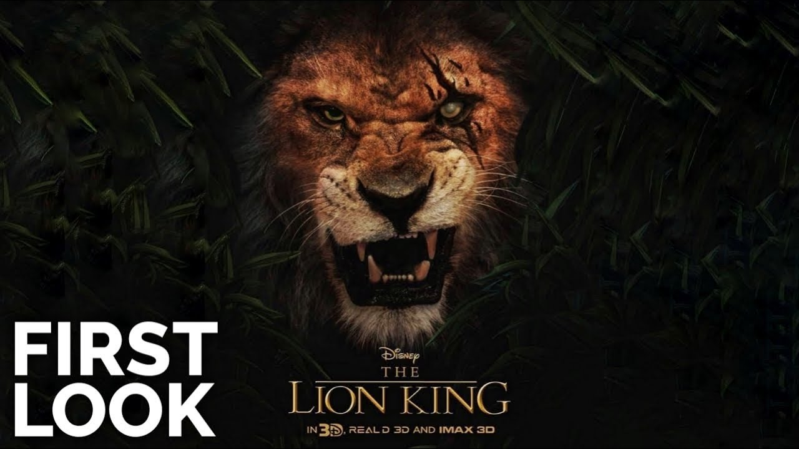
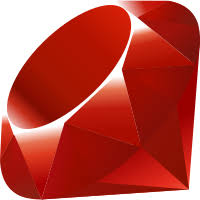
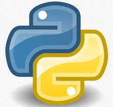
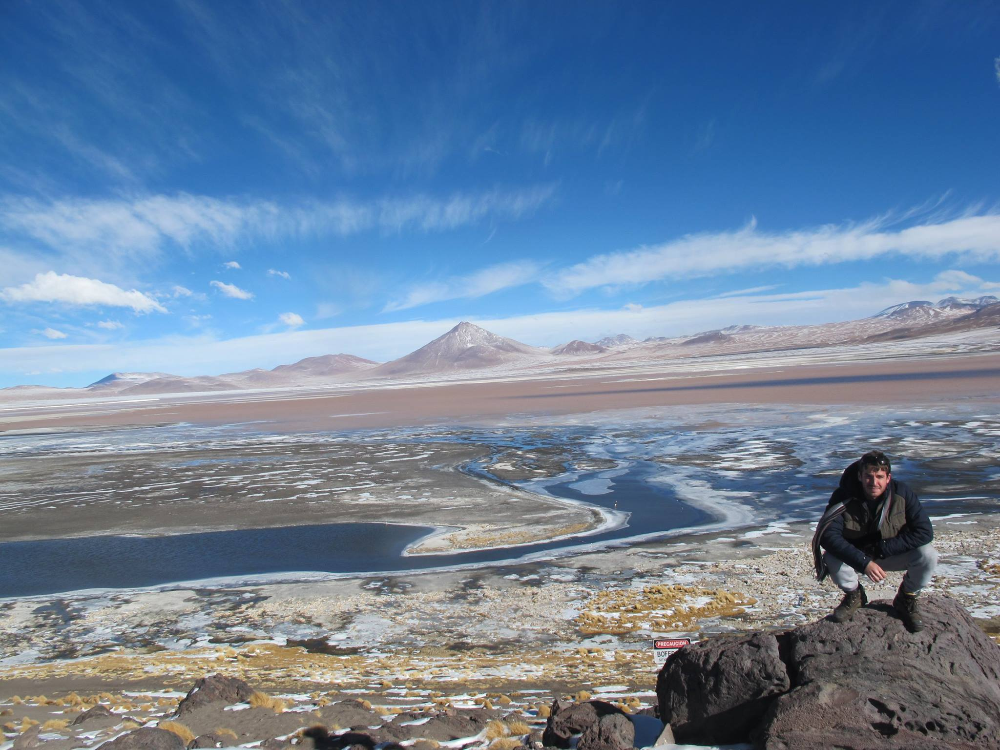
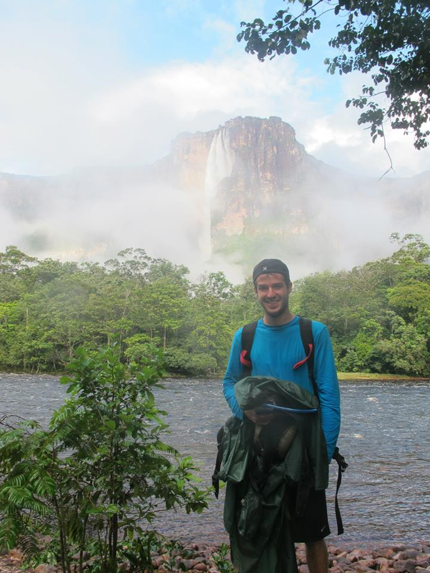
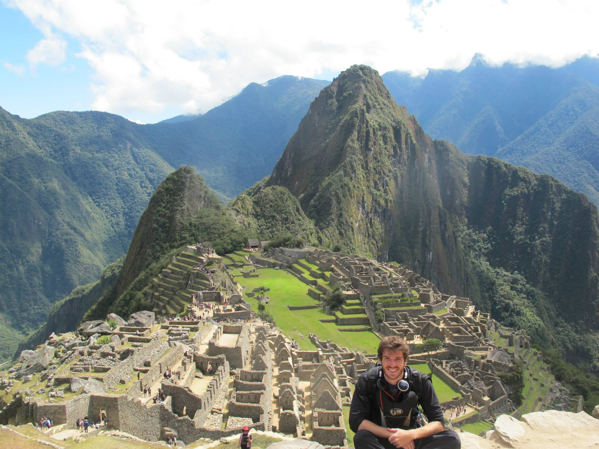
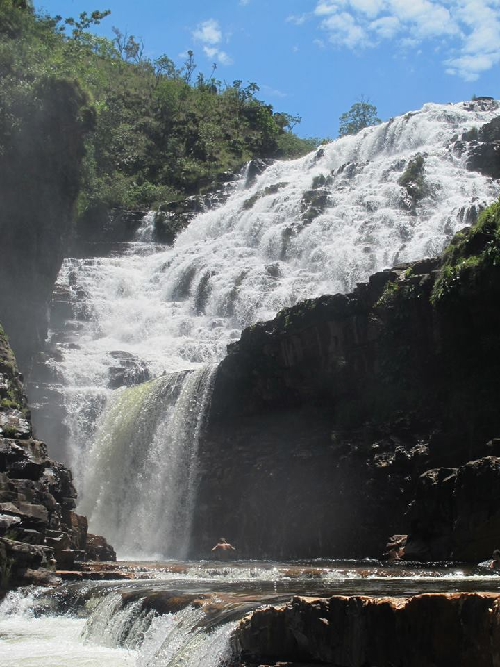

Thierry Silvagnoli
Programmer
Think outside the box The world is huge and the universe even bigger, enjoy =)
See for yourself|  | |||
| Rei Leao Uma nova releitura abusando do poder computacional grafico CGI para deixar os animais o mais real possivel, foi dos filmes que mais vi na vida, onde lema Hakuna Matata eh simplesmente genial | Click Voce gostaria de ter o controle da vida? Adam Sandler eh o protagonista do filme, onde temos drama, comedia e uma boa reflexao sobre a vida =) | Pulp Fiction Um filme onde os caminhos de vários criminosos se cruzam nestas três histórias de Quentin Tarantino. Um pistoleiro se apaixona pela mulher de seu chefe, um boxeador não se sai bem em uma luta e um casal tenta executar um plano de roubo que foge do controle. Com dialogos longos e bem estruturados, eh um filmasso! | Star Wars A sequencia de filmes mais incrivel da historia desenvolvido pela Lucas Film, o personagem principal Anakin Skywalker, foi encontrado por Quaigon e Obi Wan Kenobbi. Anakin era um garoto prodigio, sabia construir estruturas complexas e era apaixonado por corridas, no entanto era um escravo de um planeta afastado fora do controle politico da "Republica" chamado Tatoine. ao analisar as suas celulas, descobriram um grande potencial em seu DNA. Depois de alguns perrengues, Anakin chega no conselho Jedi onde passa por uma serie de testes, Mestre Yoda diz que o jovem nao deveria ser treinado por haver muito medo e raiva enrustidos no garoto e que ele poderia se tornar perigoso. SO LEIA O DETAILS SE QUISER SPOILER Moral da historia escutem e obedecam o mestre Yoda porque devido as suas insegurancas Anakin foi convertido para o lado sombrio da forca, transformou a republica em um Imperio, onde o terror reinou por muito tempo.
|
|  |  |
 |
 |
| Ruby Eh uma linguagem de backend muito ultilizada, com um mercado aquecido para programadores dessa ferramenta, com seu framework Rails muitos aplicativos estao sendo desenvolvidos. | MySQL Desenvolvido pela Oracle Cloud eh um dos databases mais ultilizados do mundo, para quem nao esta familiarizado com o termo DataBase , eh a ferramenta dos sites e aplicativos responsavel por armazenamento e grenciamento de dados, ferramenta muito ultilizada com mais de 10 milhões de instalações pelo mundo. Entre os usuários do banco de dados MySQL estão: NASA, Friendster, Banco Bradesco, Dataprev, HP, Nokia, Sony, Lufthansa, U.S. Army, U.S. Federal Reserve Bank, Associated Press, Alcatel, Slashdot, Cisco Systems, Google, entre outros | Java Script eh uma linguagem de programacao interpretada baseada em C++ e uma das mais ultilizadas na WEB, com diversas funcionaliades tendo proprio framework Node.js, com aplicabilidades de front e back end. | Python Uma linguagem relativamente recente, foi criada por Guido van Rossum em 1991, tem o framework mais ultilizado o Django , eh uma ferramenta muito ultilizada para Data Analise, por conta de suas bibliotecas poderosas como Matplotlib, Numpy, Pandas entre outras |
 |
|||
| Ripple site A moeda dos bancos, a moeda mais "centralizada" e com finalidade de ser um digital assets para pagamentos, foi contruida para fins empresarias,eh a moeda com maior velocidade nas transacoes, com incriveis 4 sec, conseguindo suportar ate 1500 transacoes por segundo e com parcerias com gigantes como por exemplo o Banco Santander, eh atualmente a terceira colocada no ranking das criptomoedas. | Bitcoin a primeira moeda digital, com maior numero de Full Nodes e de Mineradores que contribuem para deixar essa moeda digital a mais negociada do mundo, onde ate entao nunca teve problemas de hacker dentro do seu codigo, eh a moeda digital mais negociada com o dinheiro "fiat"(Real, Euro, Dolar etc), e tem como promessa assim como sua concorrente Ethereum a descentralizacao do poder, que eh concentrado principalmente nos Bancos e Paises. Seus codigos sao implementados principalmente em Python e C++ | Ethereum tem mais Tokens que todas as outras currencys, com sua linguagem matriz chamada Solidity e nos dias atuais uma conversao para Go quer criar o World Wide Computer, seu algoritmo de consensus eh o "Proof of Work"(POW) e "Proof of Stake"(POS), seu criador Vitalik Buttering um jovem Genio foi quem comecou a desenvolver essa nova modalidade de moedas digitais, com seu codigo Open Source, podemos acompanhar o desenvolvimento dessa plataforma, o principal diferencial dessa moeda e seu token, eh a ultilizacao de Smart Contracts | Consensus da Iota eh baseado em Tangle e precisa de muitos usuarios para uma rede segura, tem como ideia a implementacao do "Internet of Things" (IOT), onde Smart Cities , Carros que digirigem a partir de aplicativos sem a necessidade motorista , entre outras ideias futuristas seriam implementadas. |
|  |  |  |  |
| < Salar Yuni:: O deserto de sal, eh um lugar incrivel na bolivia, onde temos uma paisagem unica, na imagem, vemos as Montanhas Coloradas, estive no inverso pegando temperaturas de ate -40 graus, sao 3 dias de passeio e podemos ver os mais variados tipos de paisagem, como espelhos d'agua que o chao reflete o ceu, entre outros detalhes que so vemos neste lugar maravilhoso. A Bolivia eh um pais maravilhoso, onde se pode explorar as cordilheiras dos Andes com passeios de bicleta, carro, onibus, eh uma pena que tenha problemas sociais que afetam quase toda a America do Sul. | Salto Angel: Uma das maravilhas do mundo, situada na Venezuela onde temos a maior cachoeira do mundo com altura de 980m, o passeio eh uma aventura onde chegamos ate o local da foto de barco, subindo contra a correnteza e as vezes debaixo de chuva. Dormimos em redes, tendo vista direta para este monumento natural, cuidado com os mosquitos e esteja preparado para um pouco de perrengue, a Venezuela eh um pais maravilhoso com problemas politicos, mas embora sua populacao passe por dificuldades os turistas sao muito bem recebidos, voce pode fechar os passeios em varias agencias e o preco normalmente eh melhor quando fechado com agencias locais =) | Machu Pichu:Mundialmente conhecido, eh lugar de dificil acesso, criado pelos indios Inkas. Eh uma "cidade" que ja estava sendo criada antes mesmo da chegada dos espanhois, era uma cidade que apenas um grupo seleto poderia viver, os inkas eram um povo altamente superticioso, que veneravam deuses e faziam sacrificios a fim de acalmar a Pachamama "mae terra", esse povoado ja tinha um conhecimeto de estruturas altamente desenvolvido onde suas construcoes eram levemente tombadas para evitar que os abalos sismicos que acontecem com frequencia na regiao, derrubasse suas casas. Ainda nos dias de hoje o povo local fala o quíchua (idioma dos inkas). Muito conhecimento foi "perdido" gracas a invasao espanhola. | Cataratas dos Couros Situado na Chapada dos Veadeiros, onde existe mais de 100 cachoeiras num raio extremamente pequeno, eh uma catarata maravilhosa, com uma trilha cheia de quedas d`agua, para quem gosta de acampar eh um passeio de mao cheia, precos acessiveis em minha viagem fiquei acampado e nao gastava mais de 80 reais diarios, contabilizando passeios, comidas , moradia e lazer, aconselho ficar em Sao Jorge uma cidade satelite proximo da cidade de Alto Paraiso, onde se pode chegar facilmente por Onibus, o Brasil eh uma pais riquissimo em belezas naturais, e seu turismo ainda eh muito pouco explorado. |